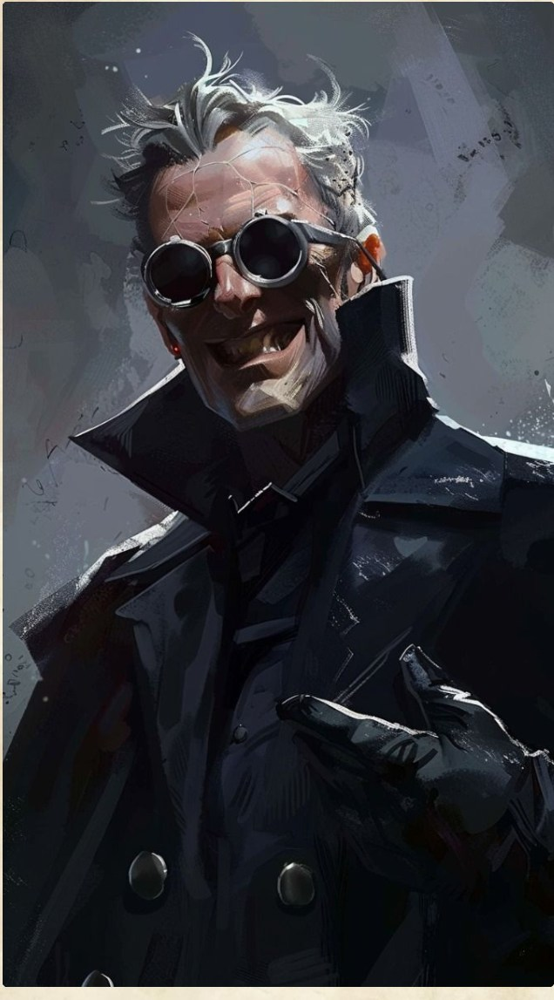

Campaign V — Bestiary — Boss
❄

Coil
CR 1513,000 XP
AC 20 (Light Armor)
Initiative +5 (15)
HP 247 (26d10+104)
Speed 45 ft.
STR
13
+1 (+1)
DEX
20
+5 (+10)
CON
18
+4 (+4)
INT
18
+4 (+9)
WIS
8
−1 (+4)
CHA
16
+3 (+3)
Saving Throws Dex +10, Int +9, Wis +4
Skills Acrobatics +10, Stealth +10, Perception +4, Investigation +9
Resistances Psychic, Thunder
Condition Immunities Charmed, Frightened, Exhaustion, Paralyzed
Senses Blindsight 30 ft., Darkvision 120 ft., Passive Perception 14
Languages Common, Undercommon, Elvish, Celestial, Abyssal
CR 15 (13,000 XP; PB +5)
Traits
Firearm Mastery. Coil ignores the loading property of firearms. Additionally, being within 5 feet of a hostile creature doesn't impose disadvantage on his ranged attack rolls.
Silvered Arsenal. Coil's firearm attacks count as silvered and magical for the purpose of overcoming resistance and immunity to attacks and damage.
Grit Pool (4/Long Rest). Coil has 4 Grit points (equal to his Intelligence modifier). When he hits with a firearm attack, he can expend 1 Grit point to deal an extra 4 (1d8) piercing damage to the target. Coil regains 1 expended Grit point whenever he scores a critical hit with a firearm or reduces a creature to 0 hit points. He cannot exceed his maximum of 4 Grit points.
Alchemist's Bullets. Coil carries three specialized Alchemist Bullets pre-loaded with magical spells. When Coil hits a target with a firearm attack using an Alchemist Bullet, the bullet detonates, triggering the stored spell centered on or targeting the struck creature (DC 18 spell save):
Eldritch Hunter. When Coil make an ability check to track or identify an aberration, celestial, fiend, monstrosity, or undead, Coil can add his proficiency bonus to the ability check. If Coil is already proficient in the ability check, he can double his proficiency bonus.
Focus Arts (5 Focus Points/Short or Long Rest). Coil has 5 Focus Points. He can expend Focus Points to activate specific Focus Arts. Whenever Coil expends a Focus Point, he gains 1 Momentum Die (1d8).
Momentum & Finishers. Coil can hold a maximum of 10 Momentum dice (Proficiency Bonus + DEX modifier). Whenever he gains a Momentum die, or if he attacks or ends his turn within 5 feet of a hostile creature, all of his Momentum dice last until the end of his next turn. He can expend all accumulated Momentum dice to execute a Finisher (DC 19 for Finisher saves).
Aerial Vault (Focus Art - Special). When Coil makes a jump, he can expend 1 Focus Point to double his jumping distance for that jump, and ignore difficult terrain until the end of his turn. The maximum distance he can jump with this Focus Art isn't limited by his walking speed.
Actions
Multiattack. Coil makes two attacks with his Moongilded Dual Pistols or two attacks with his Moongilded Rifle.
Moongilded Dual Pistols. Ranged Weapon Attack: +11 to hit, range 40/120 ft., one target., Hit: 14 (2d6 + 7) piercing damage plus 4 (1d8) piercing damage if he uses Grit.
Moongilded Rifle. Ranged Weapon Attack: +11 to hit, range 120/240 ft., one target., Hit: 20 (2d12 + 7) piercing damage plus 4 (1d8) piercing damage if he uses Grit.
Weapon Transformation (Bonus Action). Coil mechanically merges his Moongilded Dual Pistols into a Moongilded Rifle, or separates his Moongilded Rifle back into two Moongilded Dual Pistols.
Off-Hand Pistol Shot (Bonus Action). If Coil is wielding his Moongilded Dual Pistols and takes the Multiattack action on his turn, he can make one additional Moongilded Dual Pistols attack as a bonus action.
Jaeger's Rush (Focus Art). Coil expends 1 Focus Point to take the Dash action as a bonus action.
Jaeger's Assessment (Focus Art). Coil expends 1 Focus Point to make an Investigation check against a creature he can see within 60 feet, contested by its Deception check. On a success, he learns its creature type, AC, damage resistances/immunities, condition immunities, and any active spell effects on it. Alternatively, Coil can use this bonus action to take the Search action.
Volley Finisher (Finisher). While holding a firearm, Coil expends all of his accumulated Momentum dice to reload and fire a spray of shots in a 30-foot cone. Each creature in that area must make a DC 19 Dexterity saving throw, taking piercing damage equal to the total of the expended Momentum dice on a failure, or half as much on a success. If this Finisher damages 2 or more creatures, Coil regains 1 Focus Point.
Reactions
Close-Quarters Pistol Reaction. While wielding his Moongilded Dual Pistols, Coil can make an opportunity attack with one pistol when a hostile creature moves out of his 5-foot reach.
Blood Craze (Focus Art). When Coil is reduced to 0 hit points but not killed outright, he can use his reaction and expend 1 Focus Point to drop to 1 hit point instead.
Opportunistic Shot (Finisher). When a creature within 20 feet of Coil becomes paralyzed, restrained, or stunned, Coil can use his reaction to expend all of his accumulated Momentum dice and make a single weapon attack with a firearm he is holding. On a hit, the target takes damage equal to the weapon's normal damage plus damage equal to the total of the expended Momentum dice, and the target is knocked prone. Coil then regains 1 Focus Point.